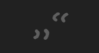

Fresh content, somehow regarding current affairs or so.
Frische Inhalte, irgendwie mit Aktualitätsbezug oder so.
Quote of the week:
Zitat der Woche:

11.08.2024
This site is currently not being extended, since I'm working on the Nexus. Meanwhile, please consider going for a hike or playing some Minecraft.
11.08.2024
Diese Seite wird derzeit nicht erweitert, da ich gerade am Nexus arbeite. Denke doch über eine kleine Wanderung nach oder spiele ein bisschen Minecraft.